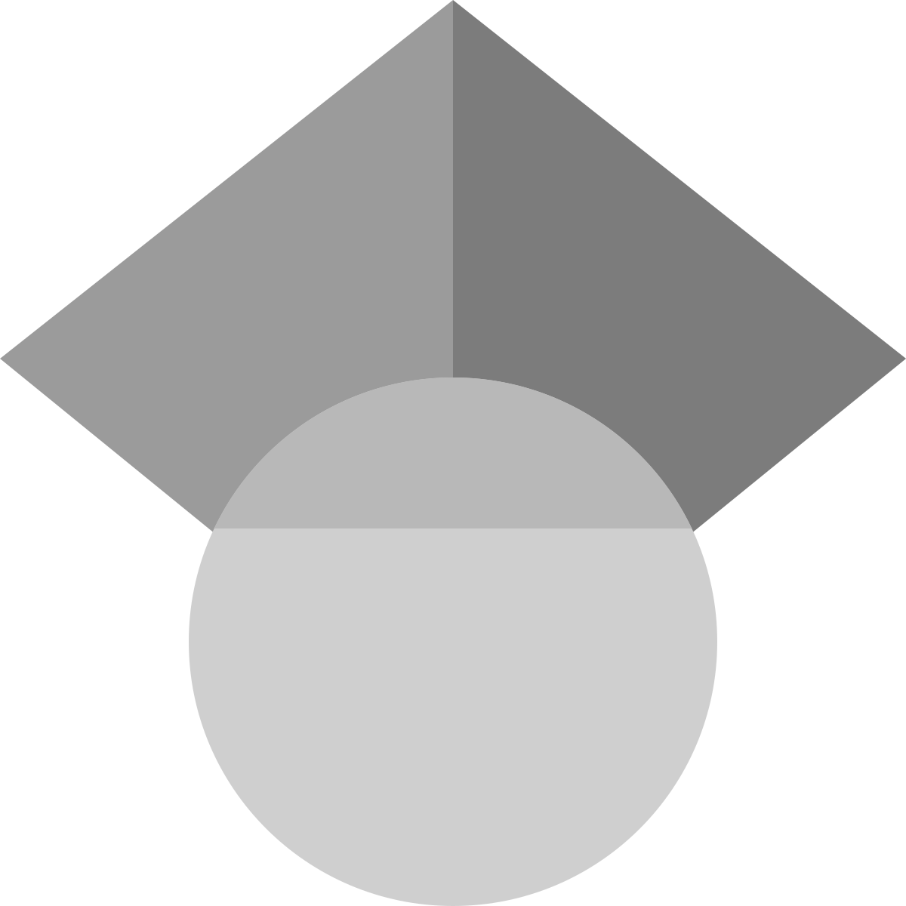
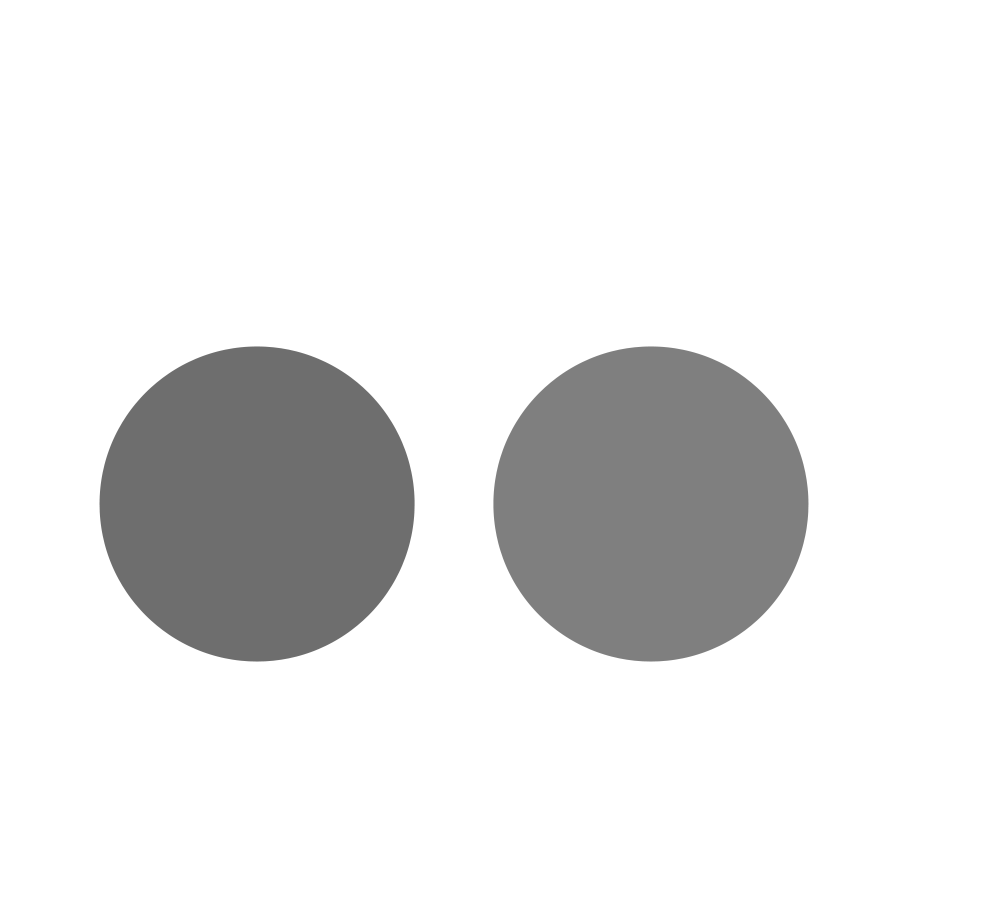
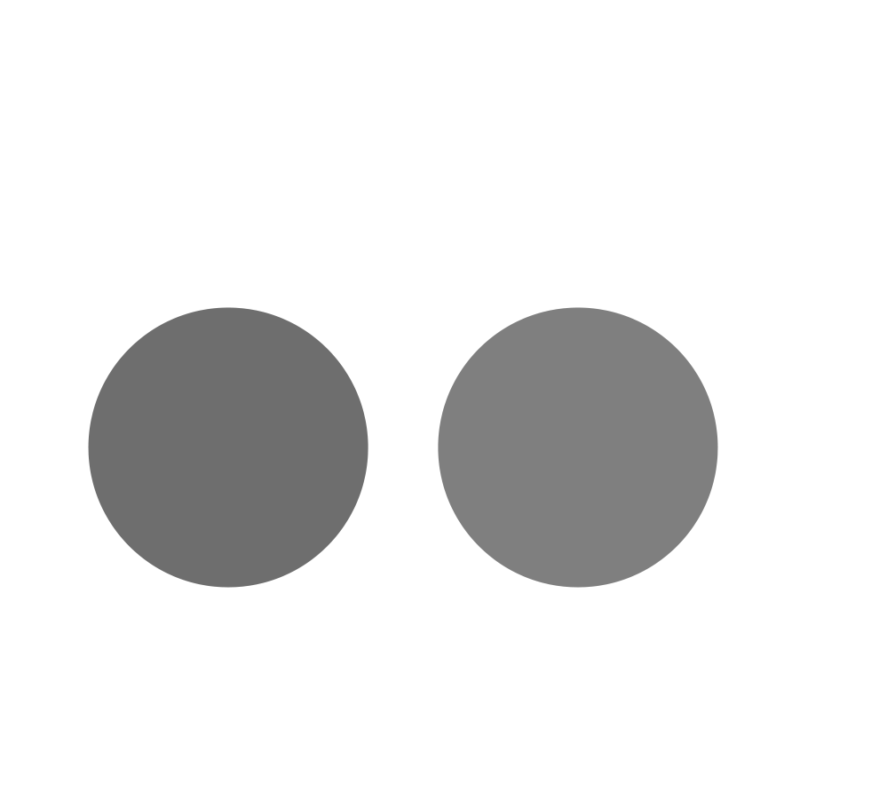

 

About
Rajesh Singh is a postdoc in the group of Professor M E Cates at the Department of Applied Mathematics and Theoretical Physics, University of Cambridge. His research interests include: hydrodynamic and phoretic interactions of colloidal particles, continuum theories of soft matter, and the Bayesian inference of stochastic processes.
Education
| 2012-18 | PhD, The Institute of Mathematical Sciences, Chennai |
| 2010-12 | MSc, Indian Institute of Technology, Kanpur |
| 2007-10 | BSc, Hindu College, University of Delhi |
Selected publications
See full list of publications on Google Scholar
Periodic Orbits of Active Particles Induced by Hydrodynamic Monopoles
A Bolitho, R Singh, and R Adhikari, Phys. Rev. Lett., 124(8), 088003, 2020
Hydrodynamically interrupted droplet growth in scalar active matter
R Singh, and M E Cates, Phys. Rev. Lett., 123(14), 148005, 2019
Competing chemical and hydrodynamic effects in autophoretic colloidal suspensions
R Singh, R Adhikari, and M E Cates, J. Chem. Phys., 161, 044901, 2019
Flow-induced phase separation of active particles is controlled by boundary conditions
S Thutupalli, D Geyer, R Singh, R Adhikari, and H Stone, Proc. Natl. Acad. Sci. 115, 2018
Fast Bayesian inference of the multivariate Ornstein-Uhlenbeck process
R Singh, D Ghosh, R Adhikari, Phys. Rev. E. 98, 012136, 2018
Universal hydrodynamic mechanisms for crystallization in active colloidal suspensions
R Singh and R Adhikari, Phys. Rev. Lett. 117, 228002, 2016
Contact
Email: rajeshrinet |at| gmail |dot| com
Adapted from the minimal theme by orderedlist